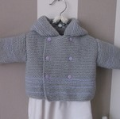
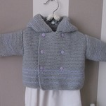

Présentation
Bonjour à toutes et à tous!
Mon nom est Annick, aussi connue sous l'identité de Mum, surnom incongru que mes enfants m'ont attribué dans leur prime jeunesse et m'attribuent encore actuellement à l'heure où ils ont quittés le nid (ne me demandez pas pourquoi je n'en ai aucune idée, mes enfants sont fous... ou stupides... c'est héréditaire il paraît...). Je suis une quincagénaire qui, pour passer ses journées, occupe ses mains et son esprit en tricotant et fabricant divers vêtements et sujets.
Un attrait pour les loisirs créatifs
Ma tante m'a appris le tricot ainsi que le crochet quand j'étais toute petite et j'ai très vite éprouvé un certaine curiosité pour ces activités : je sentais que j'avais des compétences certaines à exploiter au fur-et-à-mesure que je pratiquais et étais galvanisée par le ressenti que j'avais après avoir terminer un ouvrage (qui n'était au départ qu'une simple boule de laine). J'avais envie d'approfondir mon savoir dans ce domaine qui a fini par devenir mon principal passe-temps à l'âge adulte. J'ai pu à force de pratique apprendre de nouveau points , de nouveau motifs, en plus de m'intéresser à d'autres domaines créatifs (la couture, le point de croix; le scrapbooking entre autres).
Ce que j'aime dans le tricot
J'aime particulièrement réaliser des tricots pour les enfants, surtout les tous petits et notamment les toutes petites!!! Ce que j'aime par dessus tout c'est le relief que l'on peut mettre dans les motifs tricotés: ça me donne la sensation de dessiner en trois dimensions. J'aime me concentrer sur mes points, cela garde en forme ma mémoire car à 50 ans il faut bien s'avouer quel les neurones commencent un peu à dégénérer: donc il faut les entraîner!!! Le tricot c'est la musculation du cerveau, à défaut des muscles (quoique ça travaile un petit peu les avant-bras quand même...)
Le but de ce site
Ce site a pour seul et unique but de vous exposer mes principales réalisations, vous y trouverez trois galeries de photographies de mes travaux assorties d'une petite description pour chacune d'entre elles. Bonne navigation à vous.
Annick, alias Mum.
Menu


 
